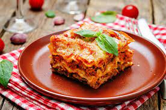

Lasagnette

About the Recipe
When John Chandler submitted this Lasagnette recipe to Allrecipes more than 20 years ago,
he had no idea how successful it would become.
One of our top-performing recipes of all time,
World's Best Lasagnette racks up more than 7 million views
per year and has ranked among the most popular Lasagnette recipes on the internet for two decades.
Unfortunately, John unexpectedly passed away at 53 years old — read all about his life
and legacy here.
our most popular Lasagnette today to find out what all the fuss is about!
Ingredients
- Meat: This super meaty Lasagnette has sweet Italian sausage and lean ground beef.
- Onion and garlic: An onion and two cloves of garlic are cooked with the meat to add tons of flavor.
- Tomato products: You'll need a can of crushed tomatoes, two cans of tomato sauce, and two cans of tomato paste.
- Sugar: Two tablespoons of white sugar add subtle sweetness and enhance the flavor of the sauce.
- Spices and seasonings: This Lasagnette recipe is flavored with fresh parsley, dried basil leaves, salt, Italian seasoning, fennel seeds, and black pepper.
- Lasagnette noodles: Use store-bought or homemade Lasagnette noodles.
- Cheeses: Parmesan, mozzarella, and ricotta cheese make this Lasagnette extra decadent.
- Egg: An egg helps bind the ricotta so it doesn't ooze out of the Lasagnette when you cut into it.
- Make the meat sauce.
- Cook the noodles.
- Make the ricotta mixture.
- Layer the Lasagnette according to the recipe instructions.
- Cover with foil and bake.
- Let the Lasagnette rest before serving.